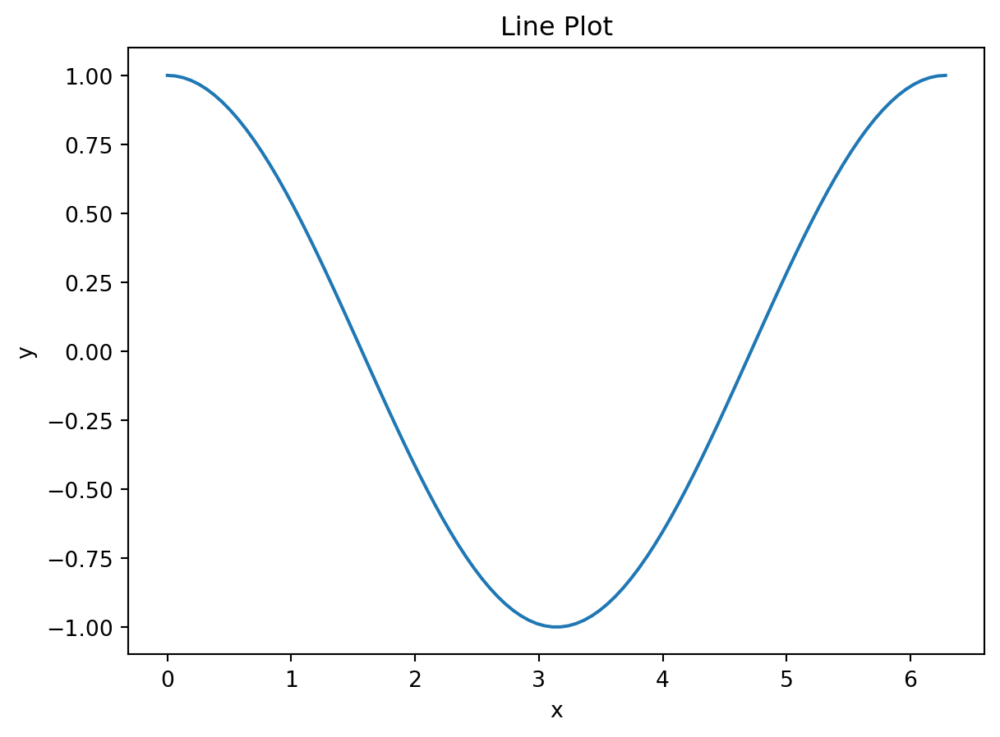
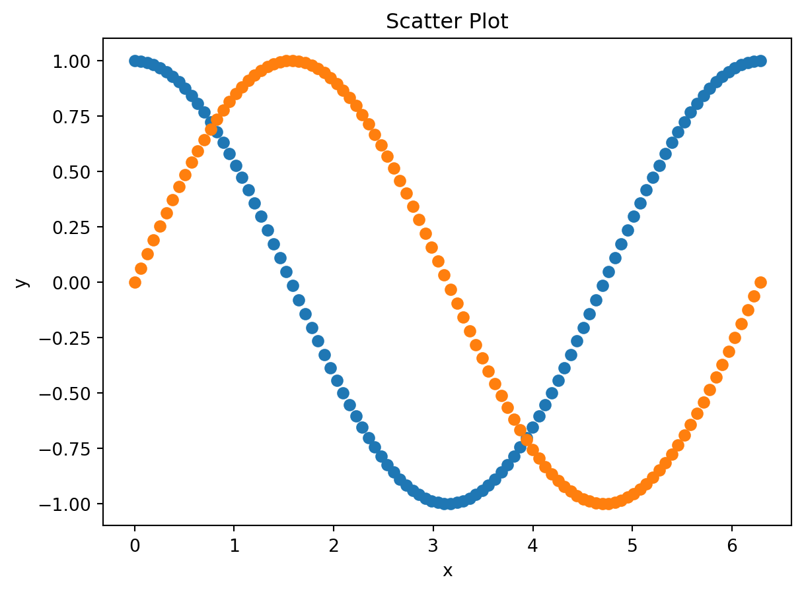
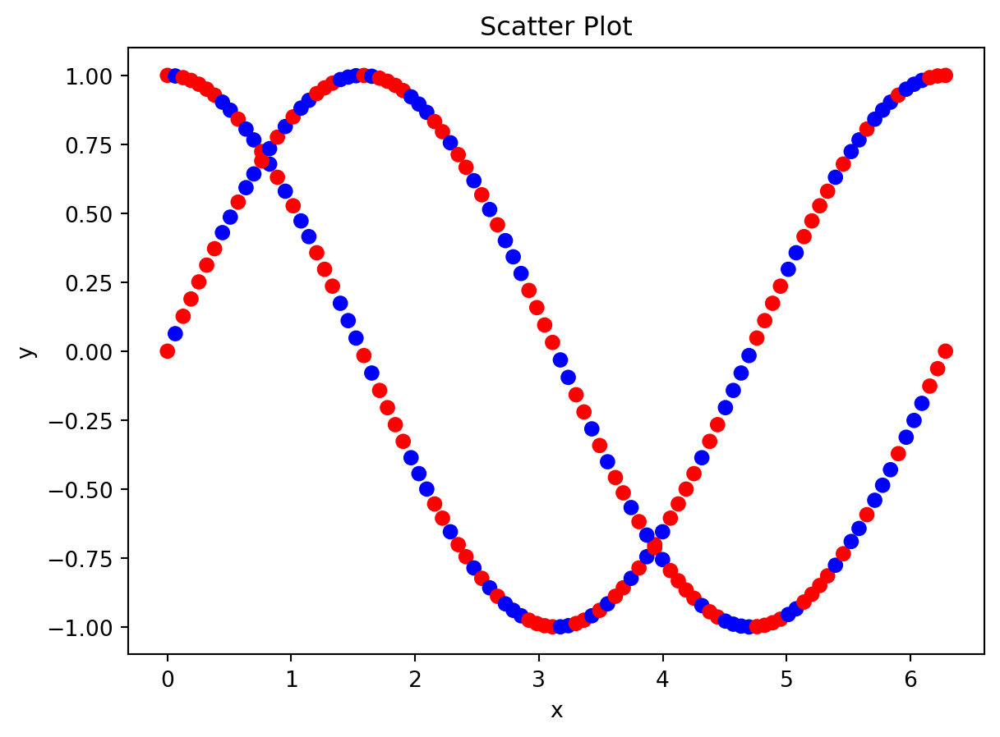
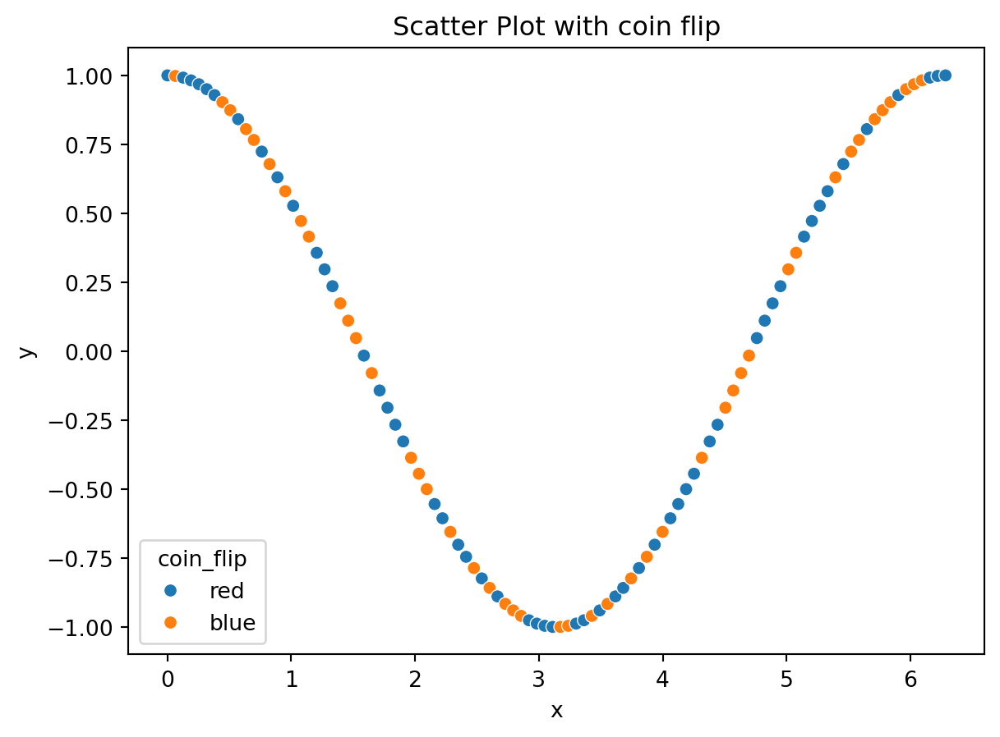
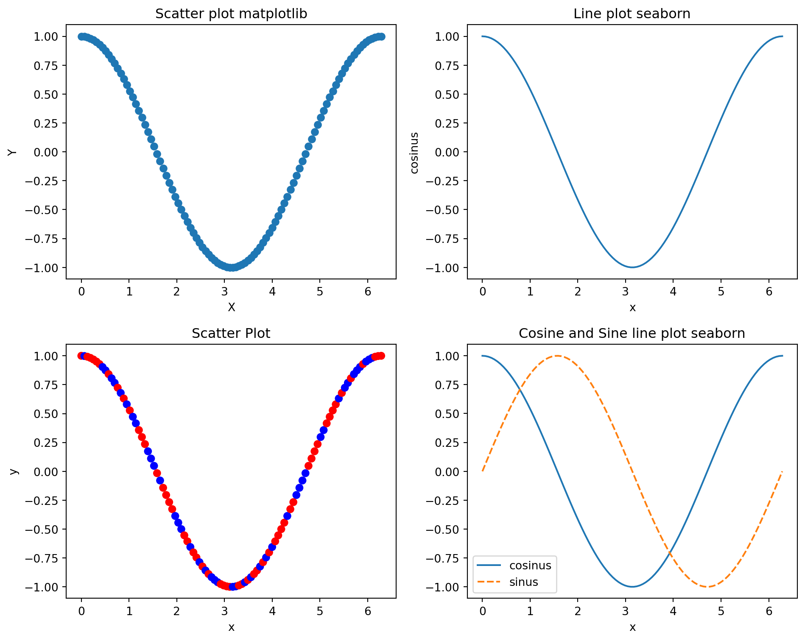

import os
os.chdir("[INSERT YOUR PATH HERE!]")Topics in Econometrics and Data Science: Tutorial 4
General Note
You will very likely find the solution to these exercises online. We, however, strongly encourage you to work on these exercises without doing so. Understanding someone else’s solution is very different from coming up with your own. Use the lecture notes and try to solve the exercises independently.
Section 1: Pandas
Exercise 1: Pandas DataFrames
Create a folder ‘data’ and save the brain_size.csv data set. You can enter the complete path of the data or change the current working directory to the path (which then should contain your data folder) by
Now load the brain_size.csv data set. The dataset contains a small sample of observations of features (like gender, weight, height and three different IQ-measures) for different individuals.
import numpy as np
import pandas as pd
brain_size = pd.read_csv('../../data/brain_size.csv', sep=';', na_values=".")
brain_size.head()| Unnamed: 0 | Gender | FSIQ | VIQ | PIQ | Weight | Height | MRI_Count | |
|---|---|---|---|---|---|---|---|---|
| 0 | 1 | Female | 133 | 132 | 124 | 118.0 | 64.5 | 816932 |
| 1 | 2 | Male | 140 | 150 | 124 | NaN | 72.5 | 1001121 |
| 2 | 3 | Male | 139 | 123 | 150 | 143.0 | 73.3 | 1038437 |
| 3 | 4 | Male | 133 | 129 | 128 | 172.0 | 68.8 | 965353 |
| 4 | 5 | Female | 137 | 132 | 134 | 147.0 | 65.0 | 951545 |
Before we perform some analysis, we will do some preprocessing.
Load the data set and drop the column
Unnamed: 0.Use
DataFrame.dropna()to clean your data from entries containingNaNvalues. How many observations are left after the data cleaning?
Calculate the following descriptive statistics.
How many observations/individuals do we have?
Calculate the means and standard deviations for VIQ, Weight and Height. What is the median of Weight?
What is the percentage of women in the data set?
As a primitive approach to determine whether there are differences based on gender, calculate the means of the features above, again conditioned on gender.
brain_size.drop(['Unnamed: 0'], axis = 1, inplace=True)print(brain_size.shape)
brain_size.dropna(inplace = True)
print(brain_size.shape)(40, 7)
(38, 7)print(brain_size['Weight'].mean())
print(brain_size['VIQ'].mean())
print(brain_size.loc[:,'VIQ'].mean())
print(brain_size.loc[:,'VIQ'].mean())
print(brain_size['VIQ'].std())
print(brain_size['Weight'].mean())
print(brain_size['Weight'].std())
print(brain_size['Height'].mean())
print(brain_size['Height'].std())151.05263157894737
112.13157894736842
112.13157894736842
112.13157894736842
22.939604667570222
151.05263157894737
23.478509286005146
68.42105263157895
3.993789631262101brain_size.describe()| FSIQ | VIQ | PIQ | Weight | Height | MRI_Count | |
|---|---|---|---|---|---|---|
| count | 38.000000 | 38.000000 | 38.000000 | 38.000000 | 38.000000 | 3.800000e+01 |
| mean | 113.552632 | 112.131579 | 111.342105 | 151.052632 | 68.421053 | 9.067542e+05 |
| std | 23.815391 | 22.939605 | 22.597867 | 23.478509 | 3.993790 | 7.256175e+04 |
| min | 77.000000 | 71.000000 | 72.000000 | 106.000000 | 62.000000 | 7.906190e+05 |
| 25% | 90.250000 | 90.250000 | 89.250000 | 135.250000 | 66.000000 | 8.548115e+05 |
| 50% | 116.500000 | 113.000000 | 115.000000 | 146.500000 | 68.000000 | 9.053990e+05 |
| 75% | 135.000000 | 129.000000 | 128.000000 | 172.000000 | 70.375000 | 9.495405e+05 |
| max | 144.000000 | 150.000000 | 150.000000 | 192.000000 | 77.000000 | 1.079549e+06 |
print(brain_size['Weight'].median())146.5print(np.sum(brain_size["Gender"]=="Female"))
print(np.sum(brain_size["Gender"]=="Male"))
brain_size.groupby('Gender').mean()
brain_size.groupby('Gender').agg('mean')20
18| FSIQ | VIQ | PIQ | Weight | Height | MRI_Count | |
|---|---|---|---|---|---|---|
| Gender | ||||||
| Female | 111.900000 | 109.450000 | 110.450000 | 137.200000 | 65.765000 | 862654.600000 |
| Male | 115.388889 | 115.111111 | 112.333333 | 166.444444 | 71.372222 | 955753.722222 |
brain_size.groupby('Gender').mean().diff(axis = 0).dropna()
brain_size.groupby('Gender').agg('mean').diff(axis = 0).dropna()| FSIQ | VIQ | PIQ | Weight | Height | MRI_Count | |
|---|---|---|---|---|---|---|
| Gender | ||||||
| Male | 3.488889 | 5.661111 | 1.883333 | 29.244444 | 5.607222 | 93099.122222 |
Section 2: Data Visualization
Exercise 1: Basic visualization with matplotlib and seaborn
In this exercise, we will visualize data from a cosinus function. To do so, set up data for a variable x with np.linspace, on which you apply the cosinus function.
Create a scatter plot with
matplotlib.Create a line plot with
seaborn.Add a sinus function to the graph in
matplotlib.Add a sinus function to the graph in
seabornvia a dashed line.Create a random variable that simulates a coin flip. Use the information according to the coin flip to provide a color argument to the scatter plot in
matplotlib.Put the four different figures as subfigures into one major figure. Save the figure in a file
my_plot.png.
# Step 1: imports
import numpy as np
import matplotlib.pyplot as plt
# Step 2: Generate the data for variable x
x = np.linspace(0, 2*np.pi, 100)
# Step 3: Apply the cosine function to x
y = np.cos(x)
# Step 4: Create a scatter plot using matplotlib
plt.scatter(x, y)
plt.xlabel('x')
plt.ylabel('y')
plt.title('Scatter Plot')
# Step 5: Show the plots
plt.show()
import pandas as pd
import seaborn as sns
# data types for seaborn
# https://seaborn.pydata.org/tutorial/data_structure.html
# Step 1: Generate the data for variable x
x = np.linspace(0, 2*np.pi, 100)
# Step 2: Apply the cosine function to x
y = np.cos(x)
# Step 3: Create a line plot using seaborn
df_plot = pd.DataFrame({'x': x, 'y': y})
sns.lineplot(df_plot, x = 'x', y = 'y')
plt.xlabel('x')
plt.ylabel('y')
plt.title('Line Plot')
# Step 4: Show the plot
plt.show()
# Step 1: imports
import numpy as np
import matplotlib.pyplot as plt
# Step 2: Generate the data for variable x
x = np.linspace(0, 2*np.pi, 100)
# Step 3: Apply the cosine function to x
y = np.cos(x)
z = np.sin(x)
# Step 4: Create a scatter plot using matplotlib
plt.scatter(x, y)
plt.scatter(x, z)
plt.xlabel('x')
plt.ylabel('y')
plt.title('Scatter Plot')
plt.show()
# Step 5: Show the plots
np.random.seed(123)
coin_flip_color = np.random.choice(['red', 'blue'], 100)
# Step 1: imports
import numpy as np
import matplotlib.pyplot as plt
# Step 2: Generate the data for variable x
x = np.linspace(0, 2*np.pi, 100)
# Step 3: Apply the cosine function to x
y = np.cos(x)
z = np.sin(x)
# Step 4: Create a scatter plot using matplotlib
plt.scatter(x, y, color = coin_flip_color)
plt.scatter(x, z, color = coin_flip_color)
plt.xlabel('x')
plt.ylabel('y')
plt.title('Scatter Plot')
# Step 5: Show the plots
plt.show()
import numpy as np
import matplotlib.pyplot as plt
# Step 2: Generate the data for variable x
x = np.linspace(0, 2*np.pi, 100)
# Step 3: Apply the cosine function to x
y = np.cos(x)
z = np.sin(x)
df = pd.DataFrame({'x': x, 'y': y, 'z': z, 'coin_flip': coin_flip_color})
# Step 4: Create a scatter plot using matplotlib
sns.scatterplot(df, x = 'x', y = 'y', hue = 'coin_flip')
plt.xlabel('x')
plt.ylabel('y')
plt.title('Scatter Plot with coin flip')
# Step 5: Show the plots
plt.show()
import seaborn as sns
# Step 1: Generate the data for variable x
x = np.linspace(0, 2*np.pi, 100)
# Step 2: Apply the cosine function to x
y = np.cos(x)
z = np.sin(x)
# Step 3: Create a line plot using seaborn
df_plot = pd.DataFrame({'x': x, 'y': y, 'z': z, 'coin_flip': coin_flip_color})
sns.lineplot(df_plot, x = 'x', y = 'y')
sns.lineplot(df_plot, x = 'x', y = 'z', linestyle = '--')
plt.xlabel('x')
plt.ylabel('y')
plt.title('Line Plot')
# Step 4: Show the plot
plt.show()
# %%
# Subfigures in matplotlib: https://matplotlib.org/stable/gallery/subplots_axes_and_figures/subfigures.html
# https://matplotlib.org/stable/gallery/subplots_axes_and_figures/subplots_demo.html
import matplotlib.pyplot as plt
# Create the figure and subplots
fig, axs = plt.subplots(2, 2, figsize=(10, 8))
# Set the title for each subplot
# Comment: You can do this in a loop too!
axs[0, 0].set_title("Scatter plot matplotlib")
axs[0, 1].set_title("Line plot seaborn")
axs[1, 0].set_title("Colored scatter plot matplotlib")
axs[1, 1].set_title("Cosine and Sine line plot seaborn")
# Scatter plot
axs[0, 0].scatter(x, y)
axs[0, 0].set_xlabel('X')
axs[0, 0].set_ylabel('Y')
# Lineplot plot seaborn
df = pd.DataFrame({'x' : x, 'cosinus' : y})
sns.lineplot(df, x = 'x', y = 'cosinus', ax=axs[0, 1])
# Colored scatter plot
axs[1,0].scatter(x, y, color = coin_flip_color)
axs[1,0].set_xlabel('x')
axs[1,0].set_ylabel('y')
axs[1,0].set_title('Scatter Plot')
# Cosine and sinus with seaborn
df = pd.DataFrame({'x' : x, 'cosinus' : y,
'sinus': z}).set_index("x")
sns.lineplot(data=df, ax=axs[1, 1])
# Adjust the spacing between subplots
plt.tight_layout()
# Show the figure
plt.show()